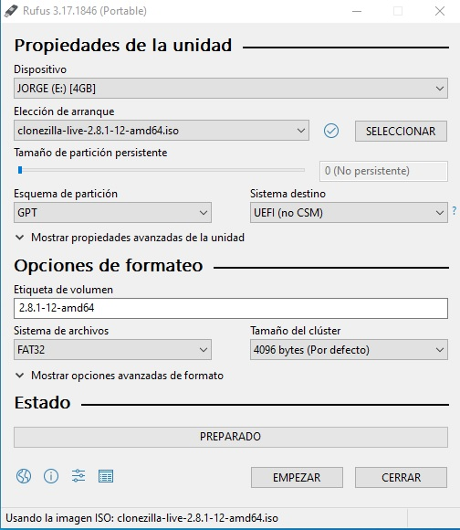

Clonezilla es un software libre de recuperación ante desastres que sirve para la clonación de discos y particiones. Clonezilla Live permite a los usuarios clonar una máquina individual, partición o disco para ser reproducido en otro medio.
En este apartado vamos a ver mediante imágenes y dos videos como preparar Clonezilla en un live pendrive para poder hacer una copia exacta de nuestro disco duro interno a un disco duro externo. Tambien veremos el siguiente paso de como restaura una copia de seguridad desde un disco duro externo a uno interno
En este apartado veremos como realizar una copia de seguridad de nuestro disco duro (y su posterior recuperación) a traves de Samba. Visto que todos mis compañeros utilizaron Windows 10 para guardar/recuperar la imagen espero que este tutorial en Ubuntu sea de ayuda.


Antes de nada debemos instalar samba desde la terminal de Ubuntu con el siguiente comando: